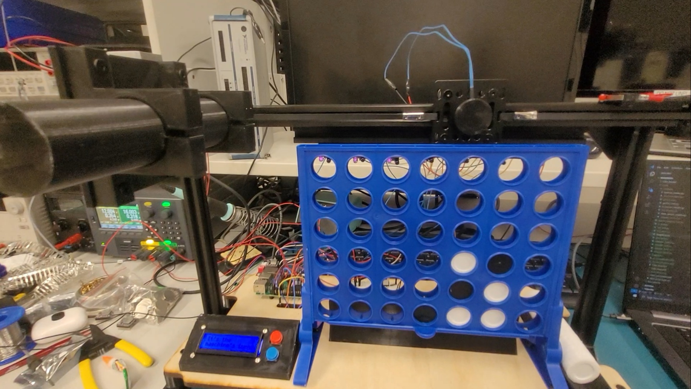
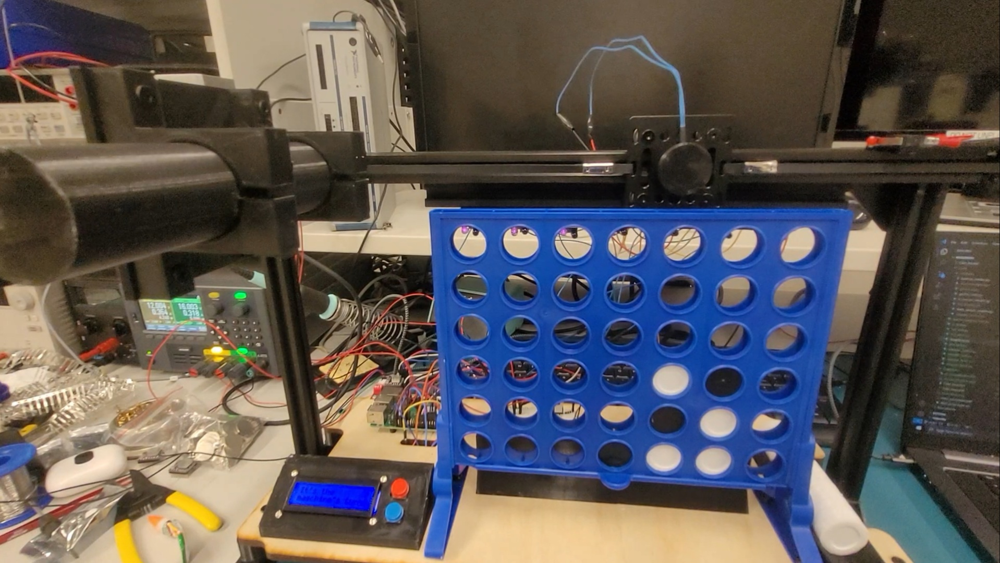
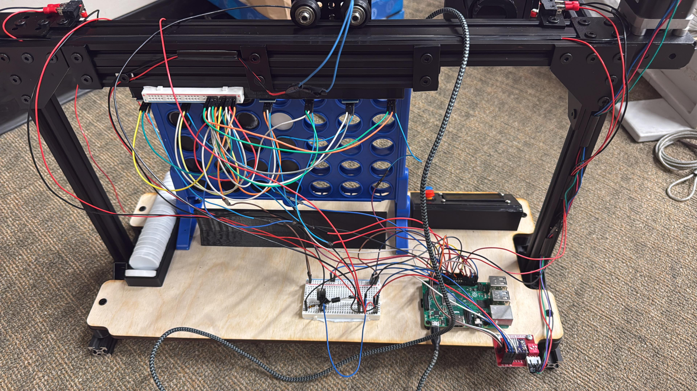
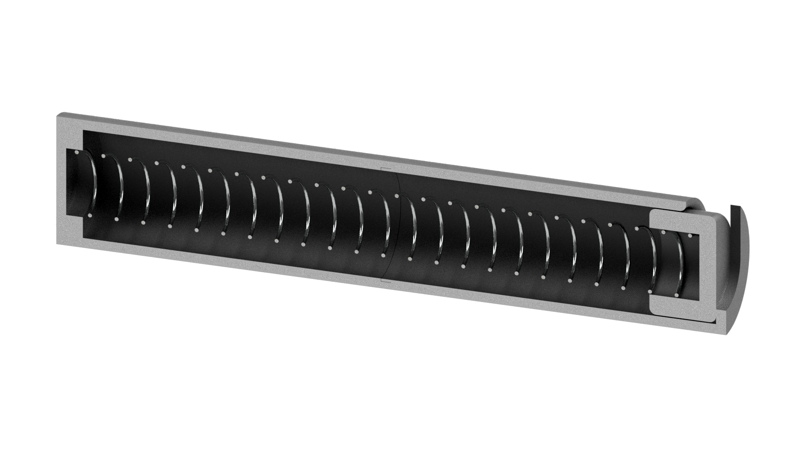
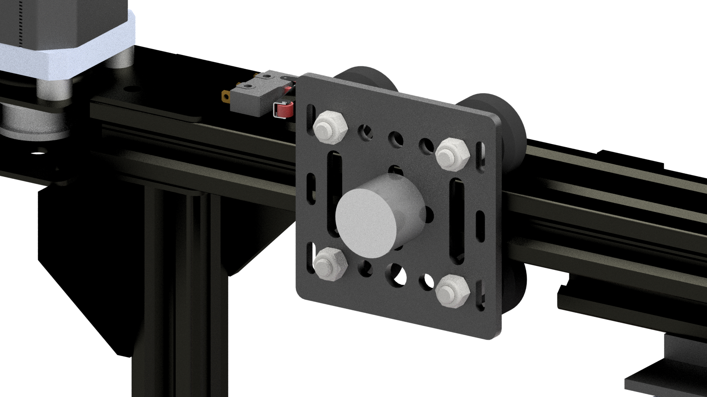
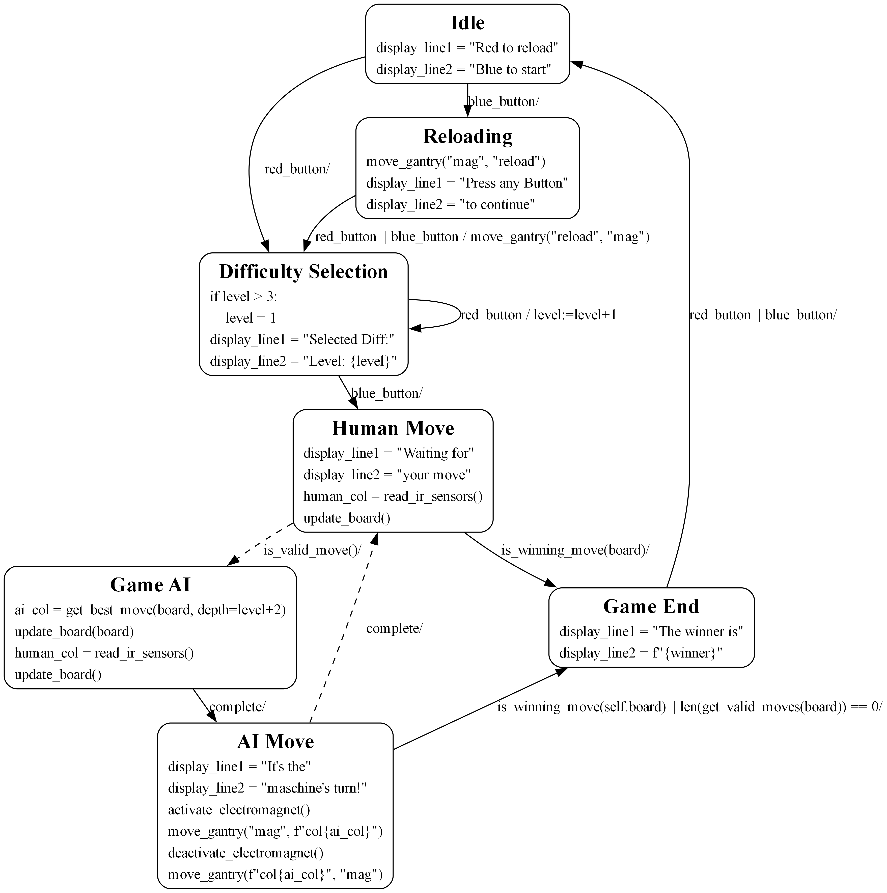
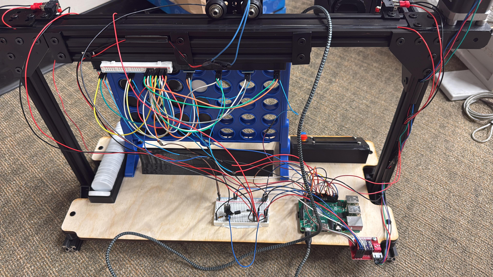
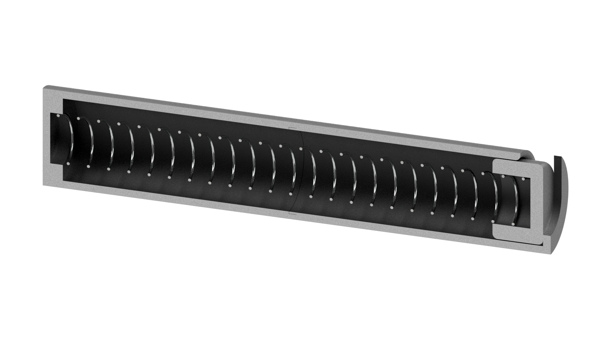
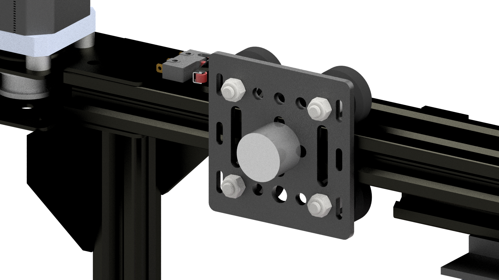
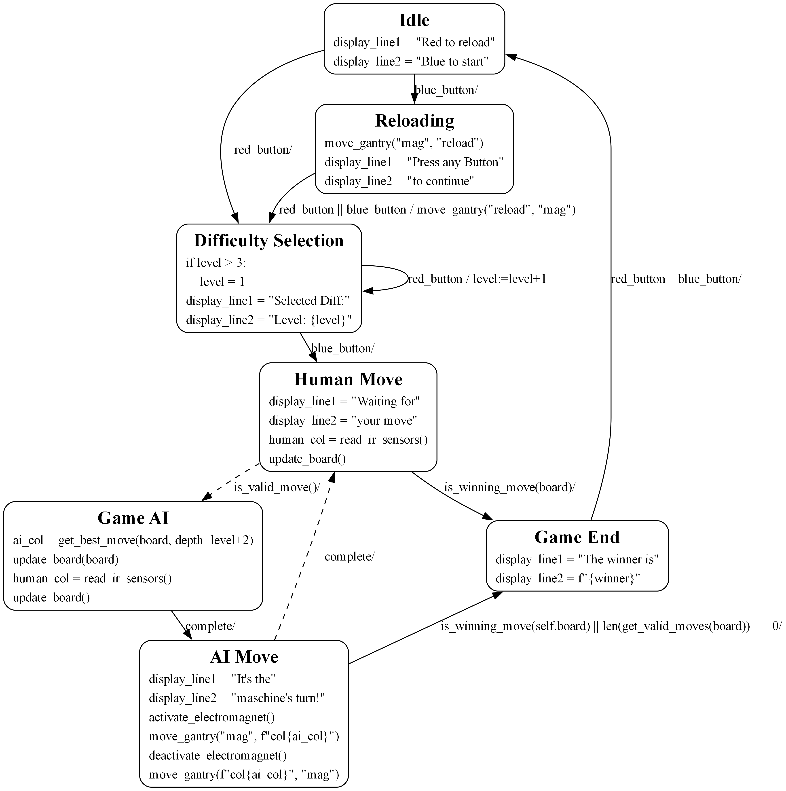

MagDrop4
2024
 

 







Overview
MagDrop4 is an autonomous Connect4-playing machine that competes on a physical board. It uses IR sensors to detect human moves, features smart game piece storage, and executes moves via an electromagnet on a linear rail. Its AI, powered by Minimax with alpha-beta pruning, selects optimal moves.
Key Highlights
- Real-Time Interaction: Uses 7 IR sensors—one per column—to detect human moves.
- Advanced Game AI: Implements a Minimax algorithm with Alpha-Beta pruning to deliver challenging gameplay.
- Precision Mechanical Design: Features a custom-built linear actuator with a stepper motor, a belt system, and a electromagnet as an gripper for accurate piece placement.
- Integrated Electrical System: Controlled and implemented on a closed embedded system using a Raspberry Pi, coordinating sensor inputs, motor control, and overall machine logic.
MagDrop4 is a comprehensive project that combines mechanical, electrical, and software engineering to create a fun, responsive, and nearly unbeatable Connect4 playing machine.